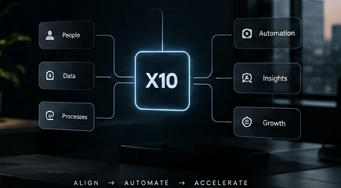

Technology organised around the outcome you need.
Services describe what we build. Solutions describe the business problems those capabilities can address.

Where software can create leverage.
Digital transformation
Move disconnected, manual or paper-heavy operations into clearer digital workflows.
- Workflow digitisation
- Legacy process modernisation
- Connected business tools
Business automation
Reduce repetitive operational work while preserving control and visibility.
- Task automation
- Notifications & approvals
- System integrations
Customer platforms
Create better digital touchpoints for customers, members or service users.
- Portals & accounts
- Booking/service journeys
- Customer workflows
AI transformation
Identify practical AI use cases and embed them into useful business workflows.
- AI-assisted operations
- Knowledge assistants
- Intelligent product features
Data & analytics
Make operational information easier to track, understand and act on.
- Management dashboards
- Reporting workflows
- Operational visibility
Custom internal systems
Build software around the way teams actually sell, manage, deliver and coordinate.
- CRM-style systems
- Operations management
- Role-based tools
Adaptable across sectors.
The core approach remains the same: understand the workflow, users and constraints, then design the right system.
Commerce, inventory, customer and operational workflows.
Administrative, service and workflow systems where requirements allow.
Student, staff, learning and administration platforms.
Booking, service, operations and internal management tools.
Workflow and business software with appropriate security and controls.
Candidate, vacancy, matching and workforce workflows.
Tracking, coordination, dispatch and operational visibility.
MVPs, SaaS products and product-engineering foundations.
Not sure which category your project fits?
That is normal. Describe the business problem and we can map it to the right product and engineering approach.